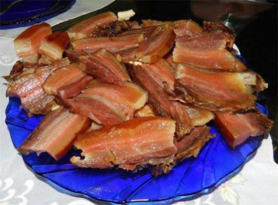
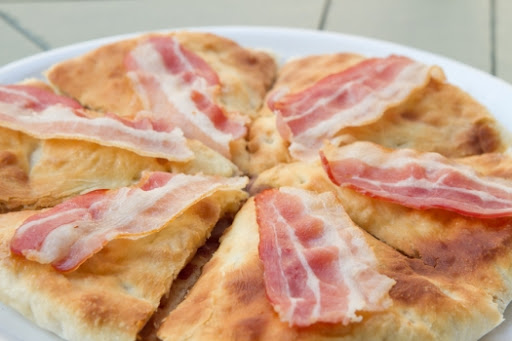
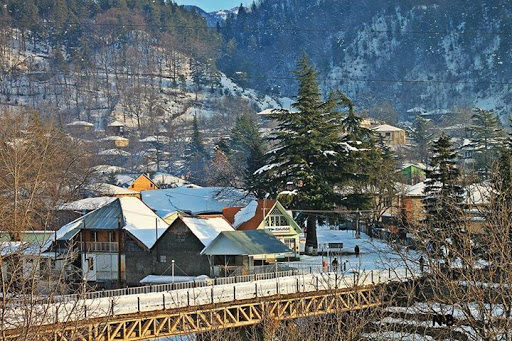

კატიწვერა მთა შუაგულ კავკასიონზე მდებარეობს
ადგილი, საიდანაც ულამაზესი ხედი იშლება და წარუშლელ შთბეჭდილებას ტოვებს, აქ შეხვდებით ულამაზეს მთის ყვავილებს და შეიგრძნობთ სუფთა, ყვავილების სურნელების ნარევ ჰაერს, რომელლიც სიცოცხლის ბოლომდე გეყოფა. სწორედ კატიწვერას გულზე მდებარეობს ულამაზესი ტბა, რომელსაც უძირო ტბას უწოდებენ, ტბაში წყალი სუფთაა და შესამჩნევია კიდეცც მისი შეფერილობაც. ყოველწლიურად ძალიან ბევრი ადამიანი სტუმრობს რაჭას და უძრო ტბას. რაჭაში ძალიან ბევრი უცხოელი ტურისტი ჩმოდის, რომლებიც იხიბლებიან რაჭის სილამაზით, რაჭა ყველას სიყვარულია.
გთავაზობთ, რამდენიმე ფოტოს რაჭა, შოვი

რაჭა, გონა პატარა შვეიცარია

რაჭა, ღები

რაჭა გამორჩეულია უგემრიელესი სამზარეულოთი აღსანიშნავია რაჭული ვიჩინა (ლორი), ლობიანი და უგემრიელესი ღვინო ხვანჭკარა.



არ უნდა დავივიწყოთ რაჭული სიმღრების მრავალხმიანობა და კულტურა ცეკვა რაჭული
აქვე გთავაზობთ ქალაქ ონის ჰიმნს
